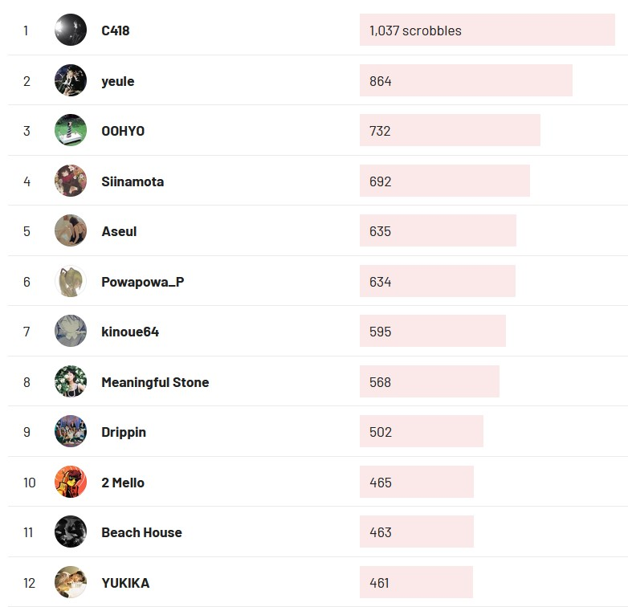

2023 music recap
table of contents:
top songs honorable mentions albums & EPs finds other stuffi feel like this year i didn't listen to THAT much music compared to last year... hmmm. or maybe i didn't enjoy as much of it  at least to other years because i have a few stuff to showcase on this page!
at least to other years because i have a few stuff to showcase on this page!
though, i think this feeling probably has to do with the fact that during the 2nd half of this year i've just gotten very very detached from kpop. I DON'T want to make it seem like i only consume kpop, BUT it is the music scene/genre that i am (or was?) tapped in the most. i always try to tune in to the latest kpop releases from groups / idols that i know of. i feel like i am at the point where ...(*￣０￣)ノ most of the kpop stuff i've listened to this year just has not interested me as much as previous years. and don't get me wrong! i do still find some bangers here and there. but i feel like that has been a bit difficult to do lately. is it getting worse? or am i getting higher standards? IDK. i'd like to think it's a mix of both. i think i can pin point a few other reasons too. but that's a topic for another time.
around november, i said goodbye to spotify premium for reasons i've discussed in a journal log in hopes to save myself those monthly $12 i would spent on spotify and instead spend them on digital bandcamp albums or even save them for CDs! i want to branch out of the way that i Normally listen to music. find more stuff that's out there! that isn't available on spotify.
my plan was to completely cut spotify from my life. but then i found out i can just download xmanager and well. yeah i still use spotify  but i'm still working towards listening to music more on bandcamp. i hope in 2024 i can go through all the releases that i have saved on over there!
but i'm still working towards listening to music more on bandcamp. i hope in 2024 i can go through all the releases that i have saved on over there!
WELL. *claps hands* i don't have anything else to say about this year. here are some songs i really enjoyed!
top 15 songs of this year
15. burn the bridge - le sserafim
this song used to have a CRAZY grip over me because i loved the instrumental so so so much despite being one of Those spoken introduction songs. i will never get why they (this is like an awful trend in kpop because they all hate me i swear) always choose the most banger stuff in the studio to make spoken tracks.... but nonetheless. i still think it deserves this spot on the list!
links: youtube audio, youtube MV
14. forest green - flyingfish
a super sweet shoegaze song. it's very charming and i love how warm it sounds. this kid is going places.
links: youtube audio, bandcamp
13. tic tac toe - TAK x Corbin
this song released last year.... BUT! the extended ver. got released this year and this has been the ver. i've been listening to all this time so i think it's allowed to be in here!
anyway. i am pretty sure this is from a rhythm game? i found this song when i was going through my NEWTYPE production team mini era since TAK and corbin are members of said team and i am familiar with their work because of kpop.
i love NEWTYPE a lot, i've always found their electropop songs a joy to listen and dance to! and this song is no different from those produced for kpop idols.
links: youtube audio, youtube MV
12. yume no manimani (remix) - weevildoing
i had this song on repeat A LOT since the day i first heard it.
i go very in-depth as to why i love this remix so much in one of my listening logs.
and i know i am a bit biased at the end of the day as an average siinamota (the original artist of yume no manimani!) BUT LISTEN: i think this remix is very nice =￣ω￣= it makes me wanna go crazyyyy and the fact that it samples a quote in the intro from hit adult swim show joe pera talks with you DOES NOT HELP ME be normal about this.
links: youtube MV
11. rising - tripleS
the grip the CHORUS of this song had on me when it dropped?!?! like i do like the entire song but i just wish it was longer :((( (are you ready to die modhaus?) but hey at least that chorus goes fucking crazyyyy.
links: youtube MV, youtube audio
10. my secret playlist - odd eye circle
fun as hell and the best song in this EP me thinks. the little bossa nova bridge coming from nowhere is pretty funny BUT i really like it as well
links: youtube audio
9. 溢れてる (overflow) - kinoue64
WE FUCKING LOVE YOU KINOUE64 !!!! my fav song of theirs from this year :) we LOVE mikugaze in this house. so soft and gentle as always.
links: bandcamp, youtube MV
8. salad days - iiso
a very chill and cute atmospheric drum n bass song by iiso :3 i discovered her music this year and it's been banger after banger. though, this song is by far my favorite.
links: youtube MV
7. dazies - yeule
so fucking lovely. i was so so so so happy when i found out that yeule's most recent album, softscars, was going to have a lot of shoegaze sounds like YAYYY i love shoegaze and my absolute favorite song from the album is this one. there's just this heaviness to it while also being so nice and soft ?!?!? also the sound of a cat PURRING in the intro is SUCH a nice detail............  ugh i love life
ugh i love life
links: bandcamp, youtube MV
6. take my hand - zerobaseone
and talking about kpop! this is another b-side that absolutely took me by surprise.
the drum & bass / 2-step that happened throughout 2023 (in the kpop sphere tho it has gone pretty mainstream THANKS pinkpantheress!) has been pretty cool for the most part, as someone who loves those genres. but still i've found that a lot of song try to give this 'trend' a try and for the most part end of falling short.
so far all of zerobaseone songs have been pretty decent for the most part and i am pretty interested in seeing where this group's discography goes. but this song is by far the best one in their discography.
i love how dreamy it is and the baseline of it is just so so so niceeeee oh lorddddd. i feel like jerma eating that burger. hmm so good.
links: youtube audio, MAMA performance
5. attitude - fromis_9

the intro song of one of the very very Few kpop albums that i really enjoyed this year!
if i had to describe this song, i would say classy. this is classy as hell. and i will always say that this is an INSANE opener for an album because from first listen all i wanted to do was listen to this song again and again and again!!! GAH idk what else to say about this one that i haven't already said.
the choreo and music show stages of this song are also a plus. i love me a good ass choreo to a great b-side!
links: youtube audio, music bank performance
4. internet yamero - Aiobahn feat. KOTOKO
honestly. i did not expect this song to appear here when i first listened to it. like i just find the production behind this so fucking good for all the different genres that manages to pull off AND VERY WELL!! a certified brain scratcher(tm).
links: youtube MV, youtube audio
3. delulu - lexie liu

i am just simply obsessed since day one with this one. everything about this is just so goddamn catchy?!?!? from the synths, the heavily processed vocals, to the drums. it scratches my brain REAL good.
links: youtube MV
2. across the spider-verse (start a band) - daniel pemberton
what an unforgettable experience this movie was. from the intro song to the very end, this movie's soundtrack (technically the score, but like same thing) ALWAYS left me with my jaw opened in that theater because i simply could not believe HOW GOOD IT WAS!!!! i always have an ear out for the soundtracks of media that i consume, and it has been VERY rare that a soundtrack has left such an impression on me from the very first listen. we all know that i am no expert when it comes to music. but you can tell this whole thing is just pure genius. the mixture of different textures, instruments, and sounds is genuinely amazing and something that i will never forget hearing for the first time. it was life changing.
also besides daniel pemberton and everyone else involved in the making of this score, i wanna give a quick shoutout to the person who did the record scratching throughout the OST in both movies: dj blakey. who did SUCH a great job during those record scratching bits. i've never heard anything like it before. scratching the orquestra
..... ARE YOU KIDDING ME???
i really like learning about the behind the scenes of the music i like, so i really recommend watching this AMA / interview that daniel pemberton did! it is super interesting to hear and see the BTS of this soundtrack given it is such a unique one. as i was in the middle of writing this, they have also put out a BTS of the making of start a band !!! they knew i was going insane over this song. awesome!
AND ALSO, YES, the media this comes from is fucking amazing. but i still really really really love this OST on its own. but i have to admit that it's even more mindblowing and genius when paired with the film. OBVIOUSLY.
links: youtube audio
1. crawl space - turquoisedeath (ft. 2021)
i love this song so much.......... i think it is soooo cute and whimsical in a sense. i can't help but smile every time i listen to it. this is really the kind of drum n bass stuff that i love the most. it's so full of emotion.
links: bandcamp, youtube audio
honorable mentions
songs that didn't make it to the list but still made my year!
- visions getting blurred - BÉBE YANA
honestly genius single release. i think one of the reasons why i might have not listened to this AS MUCH as i wanted is because of the personal nerf that i have where i have a very lowkey but personal hatred towards reguetón. with that said, my favorite side of this single is side B because it is the most interesting one in terms of instrumentation. anddd it's also the side that features a reguetón-esque beat to it. win-lose situation for me i guess
- bye-bye strobe - erbatur
a remix of siinamota's strobe series! very heartwarming and made me a bit emotional. - 化かせ (bakase) - 4na
random find from this year but a very pleasant one! i need to check this artist out more. - give me your TMI - stray kids
putting this one at last because i've never been a big fan of rap verses (in kpop.) but ... the chorus and instrumental of this genuinely fucks. thank you NEWTYPE! - abon - daoko
- 虎狼来 (kororon) - eve
the music video carries the song BUT ALSO it's a lowkey jam! do watch the music video though. it's so gorgeous! and gay girls. - 가까이 하고 싶은 그대 (i want to be closer to you) - yukika
YUKIKA MEOW MEOW ヽ(✿ﾟ▽ﾟ)ノ - the soul savior ~ I don't need a superman - billlie
a very pleasant surprise from this month! - speed love - tripleS / LOVElution
i didn't include this one on the list because i dont like having the same artists twice (even if this is a subunit of tripleS but WHATEVER) but this song REALLYYYY stick with me through out this year
favorite albums and eps
se bueno - TURQUOISEDEATH
あなただけに聴いてほしい (i only want you to listen to it) - kinoue64
softscars - yeule
voca works- erbatur
so many blue albums this year.........
across the spider verse OST - daniel pemberton
(1) - youra
favorite finds
futureisfailed
a turkish electronic artist i found through a siinamota discord server through their remixes of :D siinamota songs.
my first exposure to their stuff was this remix of halo. i've been following them on bandcamp since then and enjoying the stuff they have put out!
i really love how they use breakbeats in siinamota's songs, it adds like a more... personal layer to them idk!!!
besides their remixes, i also really like their original stuff such as 異邦ツチノコ and miku opera. these two being some of my favorites from the voca works album. i recommend their stuff if you're into vocaloid and breakcore!
hikaru utada
OMG but what a highlight of this year. to hear BADモード (bad mode) for the very first time! and this all happened because i stumbled upon somewhere near marseilles while browsing viter's website!
since then i've been going through a hikaru utada rabbit hole 
i still need to listen to the albums that viter recommended to me but i've been busier than usual lately so i haven't gotten around to listen to them!
here's a list of them for my own reference o(*￣▽￣*)o
- deep river
- distance
- fantome extras!
- exodus
- this is the one
lexie liu
QUEEN??? i've only heard the happy star but that album really sold on what she can bring to the table!! i feel like everything i've heard of hers just scratches my brain SOOOOO good.
other stuff
2023 overview (thanks last.fm)
artists scrobbled: 1,445
albums scrobbled: 2,602
tracks scrobbled: 5,372
my scrobbles per month
my spotify playlist of every song i discovered this year! at the time of writing this, it has up to 641 songs
- RYM yearly log with thoughts of everything i listened to this year
credit: background from iiso's salad days MV